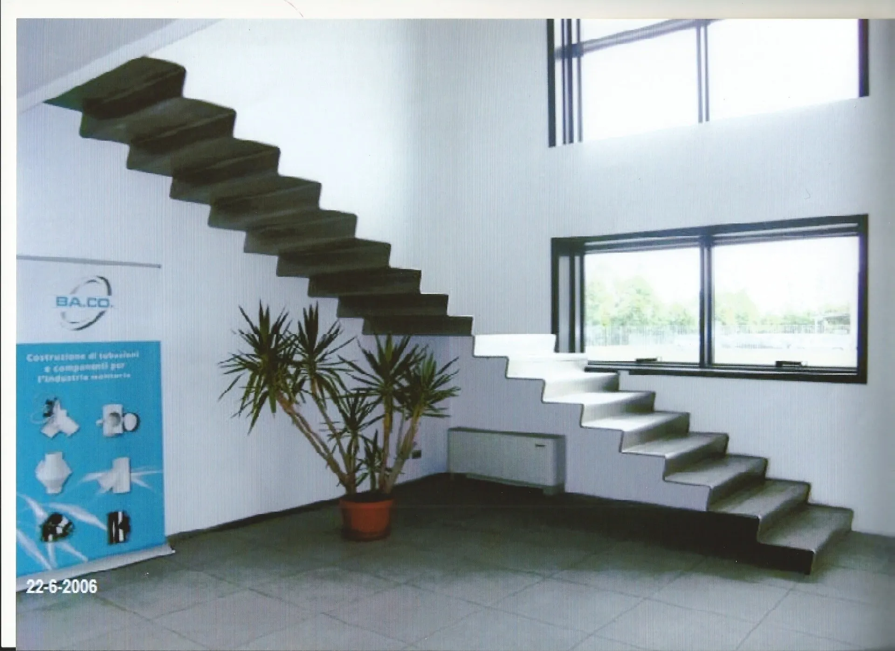
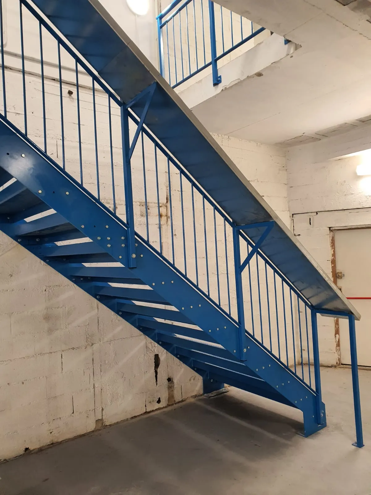
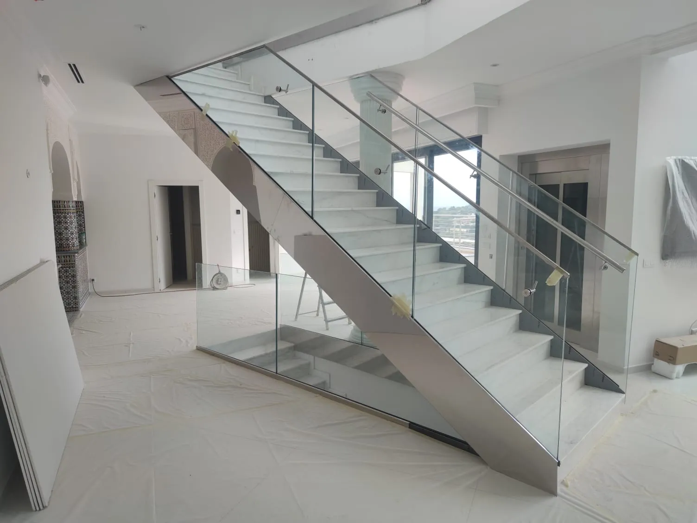
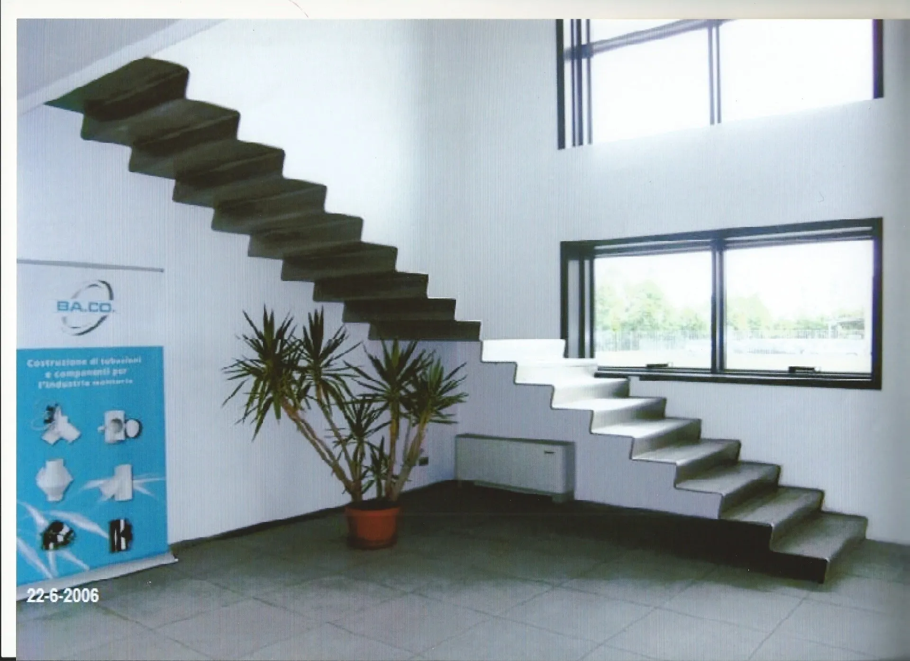
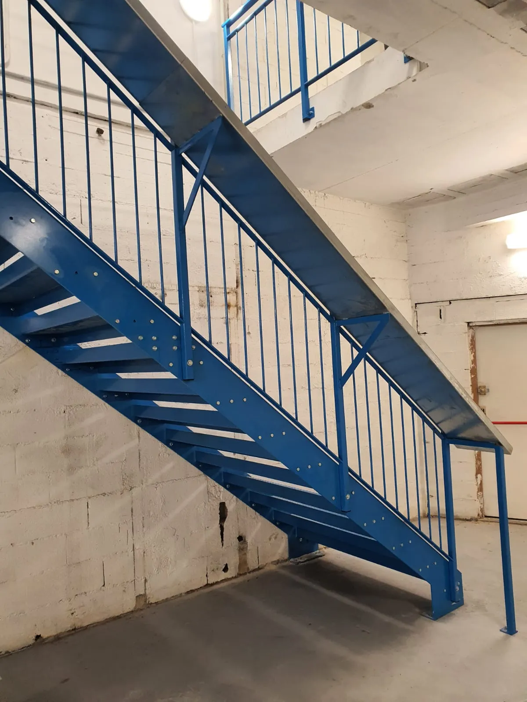
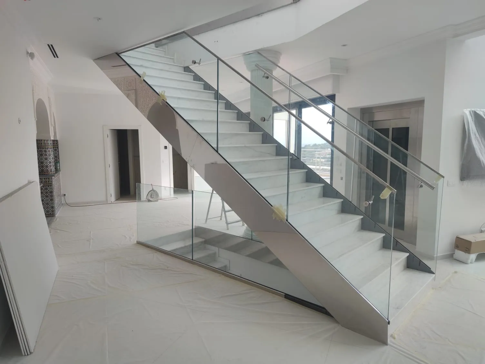

ESCALIERS

Découvrez notre savoir-faire en feronnerie
A travers une selection d'escaliers réalisés sur mesure pour nos clients.
Chaque pièce est concue dans le respect des normes de sécurités, avec des finitions soignées et des matériaux de qualités.
Qu'il s'agisse d'un escalier intérieur ou extérieur, droit, quart tournant ou hélicoidal, nous adaptons nos créations a votre espace et a votre style.
NOS REALISATIONS
Des escaliers sur mesure, alliant robustesse et élégance.


 





ESCALIERS
Découvrez notre savoir-faire en feronnerie
A travers une selection d'escaliers réalisés sur mesure pour nos clients.
Chaque pièce est concue dans le respect des normes de sécurités, avec des finitions soignées et des matériaux de qualités.
Qu'il s'agisse d'un escalier intérieur ou extérieur, droit, quart tournant ou hélicoidal, nous adaptons nos créations a votre espace et a votre style.